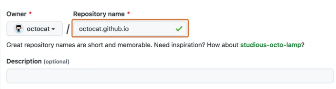

🔹 Sesión 8#
Publicar mapas interactivos en la web#
En esta sesión vamos a aprender a publicar mapas interactivos creados con Folium en la web a través de Github Pages.
Tendremos dos tutoriales:
Uno para personas que ya han trabajado con
GityGitHub.Otro para personas que prefieren no usar la terminal (command prompt) y quieren hacerlo solo desde el navegador.
Puedes revisar la documentación oficial de GitHub Pages.
¿Qué necesitas?#
Tener una cuenta en github
Tener un archivo
mapa.htmlgenerado conFoliumEjemplo en Python:
import folium m = folium.Map(location=[19.4326, -99.1332], zoom_start=12) m.save("mapa.html")
Opción 2: Publicar usando Git y la terminal#
Git Bash
Si estás utilizando Windows, te recomiendo usar la terminal Git Bash para clonar repositorios desde GitHub, ya que ofrece una experiencia más fluida y compatible con comandos de Unix.
1. Sigue el paso número 1 de Opción 1#
Desde tu computadora (requiere tener Git instalado):
# Clona el repositorio desde GitHub a tu computadora
git clone https://github.com/tuusuarix/mi-mapa-darks.git
# Entra a la carpeta del repositorio clonado
cd mi-mapa-darks
# (Asegúrate de que tu archivo mapa.html esté aquí; si no, muévelo o créalo aquí)
# Añade el archivo (o todos los cambios)
git add mapa.html
# Haz un commit con un mensaje
git commit -m "Subo el archivo mapa.html"
# Sube el cambio a GitHub
git push origin main
2. Sigue el paso 3 de la Opción 1#
Pro Tip 🔥🔥🔥#
Ya publicamos un mapa de forma muy sencilla, ¡pero tenemos ciertas limitaciones!
¿Qué pasa si además de nuestros mapas interactivos queremos compartir gráficos, texto, imágenes o explicaciones completas?
Te comparto una opción relativamente fácil que puedes aplicar de inmediato 😉
Usando GitHub Pages + Jekyll#
Puedes consulta esta documentación oficial de Jekyll | GitHub Pages.
…pero aquí te lo explico paso a paso 👇
1️⃣ En GitHub creamos un nuevo repositorio.
Esta vez sí debe seguir la estructura
numbreusuario.github.io, como en el siguiente ejemplo:

Asegúrate de que el repositorio sea público.
Marca la opción para generar un archivo
README.md.
2️⃣ Clona tu repositorio localmente
Puedes usar
Git Bashy trabajar en tu editor favorito, comoVisual Studio Codeu otro IDE.
3️⃣ Después de clonar, probablemente solo tendrás README.md. Agrega la siguiente estructura:
MAPAI.GITHUB.IO/
├── assets/ # Carpeta para tus mapas HTML, imágenes u otros recursos
│ ├── mymap_darks.html
│ └── tipos_culturales.html
│
├── _config.yml # Configuración de Jekyll (requerido por GitHub Pages)
├── index.md # Página principal (Markdown procesado por Jekyll)
└── README.md # (Opcional) Descripción del repositorio para GitHub
📁 Carpeta assets#
Aquí puedes colocar los archivos html generados con folium, así como imágenes u otros recursos estáticos que desees mostrar en tu sitio.
⚙️ Archivo _config.yml#
Este archivo es obligatorio para que Jekyll procese correctamente tu sitio.
remote_theme: pages-themes/cayman@v0.2.0
plugins:
- jekyll-remote-theme # puedes cambiar conforme el repositorio del tema de tu elección
title: Mapa interactivo
description: Este es un proyecto que muestra visualizaciones con mapitas.
include:
- assets/mymap_darks.html
Puedes cambiar el tema según el que más te guste. Aquí usamos el tema Cayman.
Te comparto la lista oficial de temas.
⚙️ Archivo index.md#
Este será el contenido principal visible en tu sitio. Aquí tienes un ejemplo:
---
layout: default
title: Mapa Interactivo
---
# Bienvenido
Este proyecto muestra un **mapa de calor** interactivo de ciertos puntos geográficos en la ciudad de Guadalajara.
Fue generado con **Python** usando la librería `folium`, y desplegado con **GitHub Pages** usando `Jekyll`.
## ¿Qué representa este mapa?
Este mapa permite visualizar concentraciones de datos geográficos, el tema es:
- Centros culturales
La intensidad del color indica la densidad de puntos en esa zona.
Puedes visualizarlo aquí
<iframe src="/mapai.github.io/assets/mymap_darks.html"
width="100%" height="800"
style="border: none; max-width: 100%;">
</iframe>
## Gráfico: Sitios culturales por tipo
<iframe src="/mapai.github.io/assets/tipos_culturales.html"
width="100%" height="600" style="border:none;"></iframe>
## Tecnologías utilizadas
- [Folium](https://python-visualization.github.io/folium/) para crear el mapa interactivo
- [Leaflet.js](https://leafletjs.com/) como motor de mapas
- [GitHub Pages](https://pages.github.com/) para hospedar este sitio
- Tema de Jekyll: `minimal`
Ojo
Los mapas se integran mediante iframes. Solo necesitas que los archivos .html estén dentro de la carpeta assets/ y hacer referencia a ellos desde tu Markdown.
Este es un ejemplo muy simple, pero ideal si estás dando tus primeros pasos. Te animo a experimentar, personalizar y descubrir todo lo que puedes hacer con estas herramientas.
Si quieres llevar tu sitio al siguiente nivel, aquí tienes la documentación oficial de Jekyll para explorar opciones más avanzadas y profesionales 🚀.